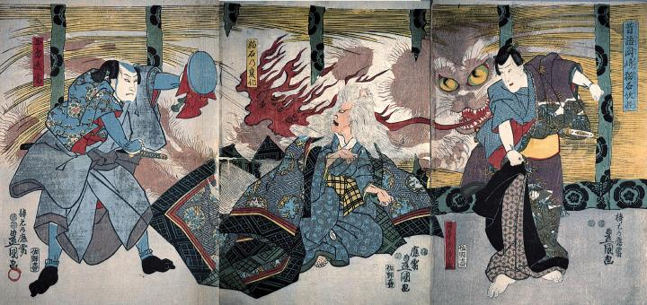

頭に猫耳のある老婆。猫の化身である。男が掲げた鏡によって正体が背後の御簾に映し出される。そこには怪火を吐く巨大な猫が映っている。
著作者：歌川国貞／出典：親書誌：M80_naprstek_0016：昔語岡崎猫石妖怪；ムカシバナシオカザキネコイシヨウカイ／日付：2011／資源識別子：M80_naprstek_0016_0001_0000
Copyright (c)2010- International Research Center for Japanese Studies, Kyoto, Japan. All rights reserved.